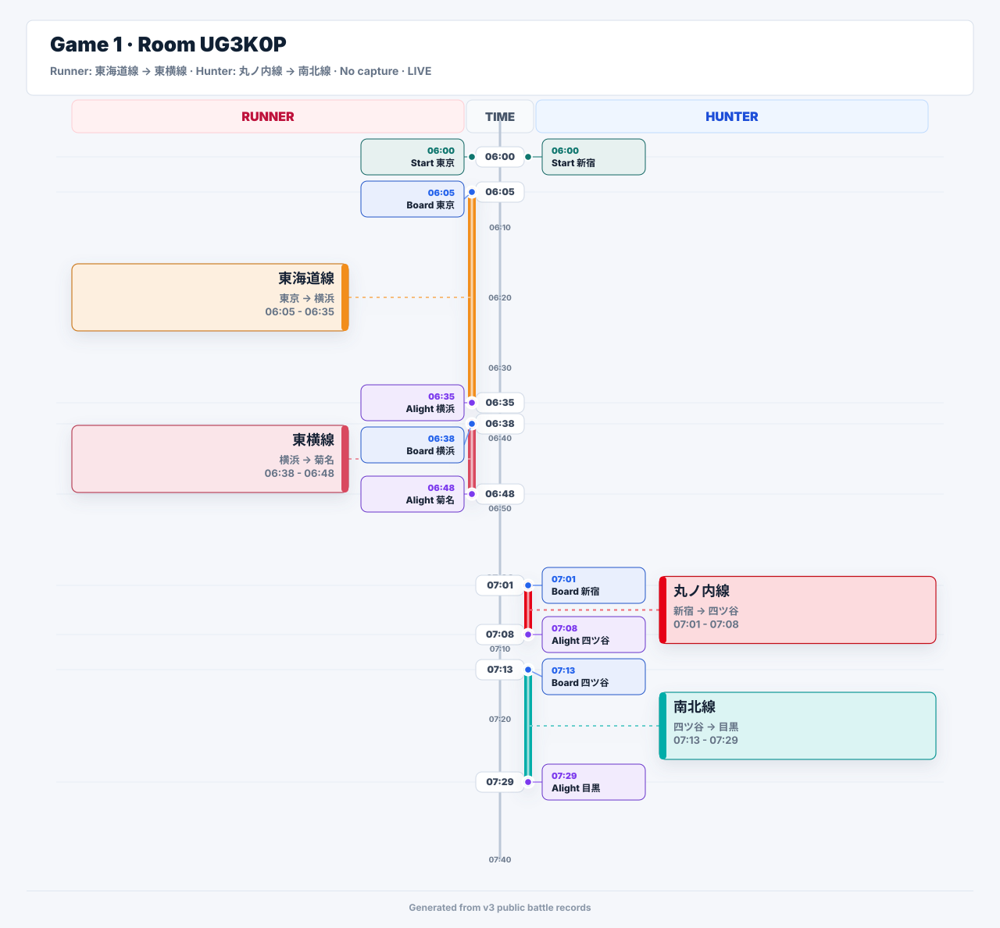
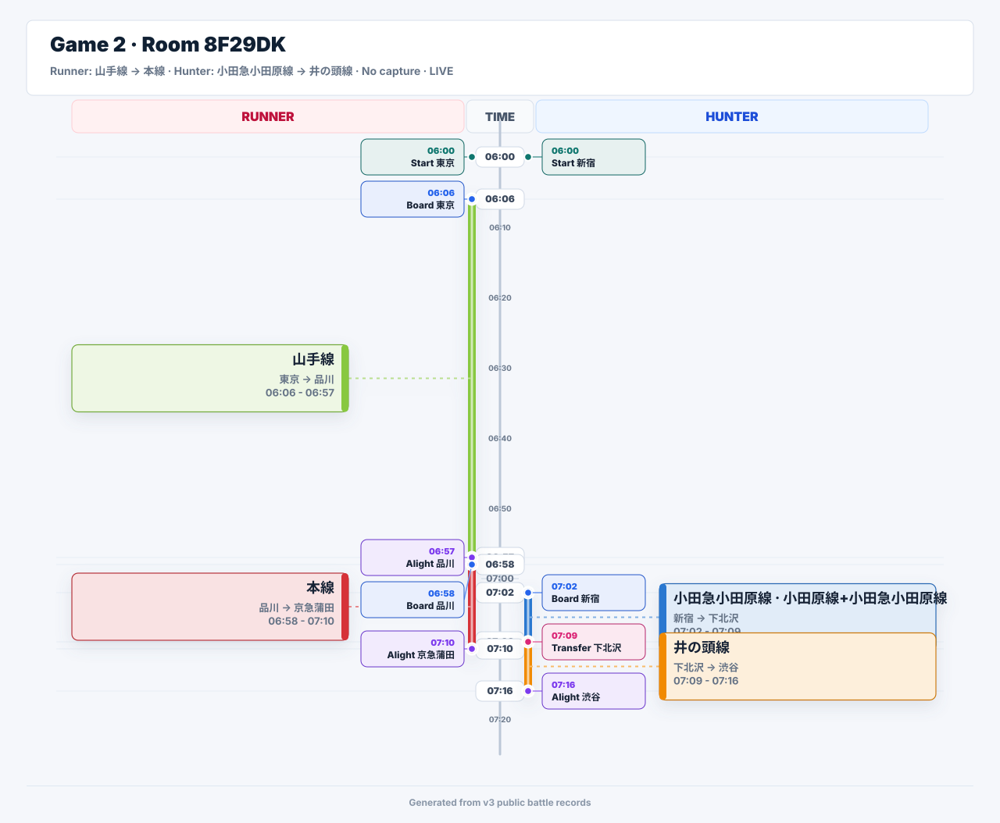
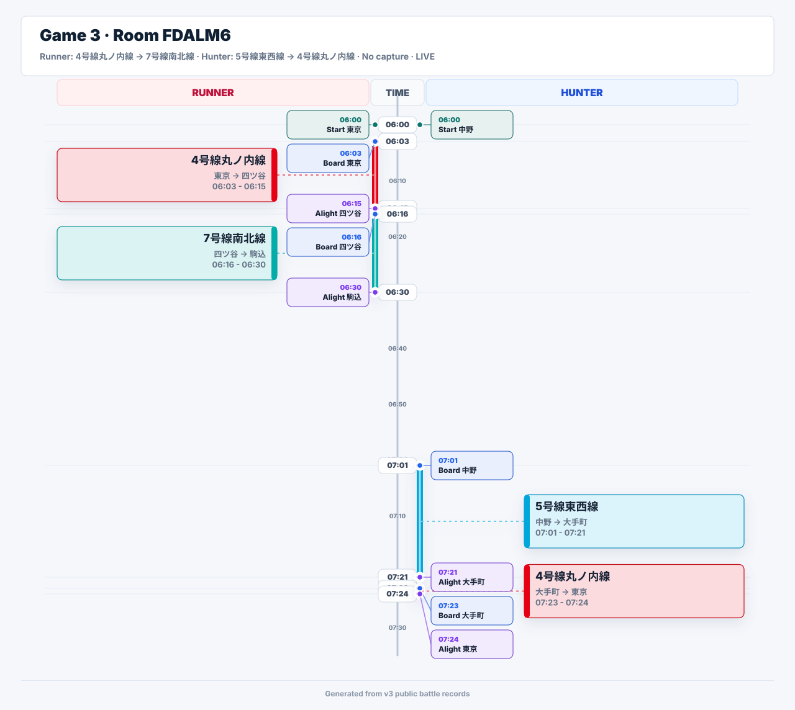
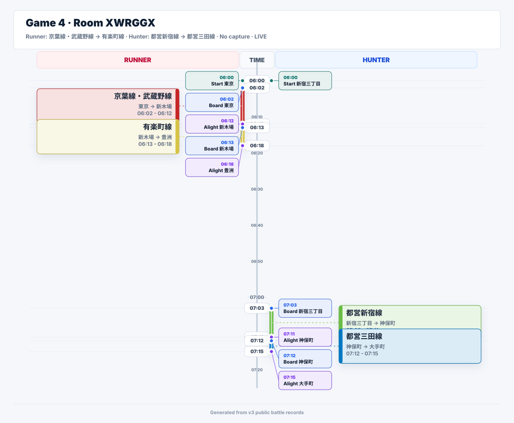
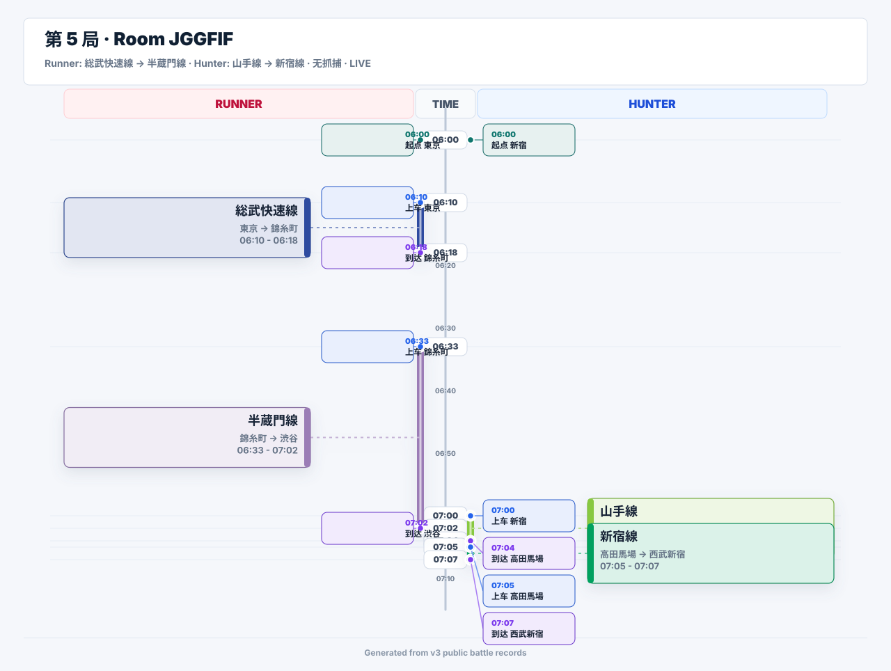
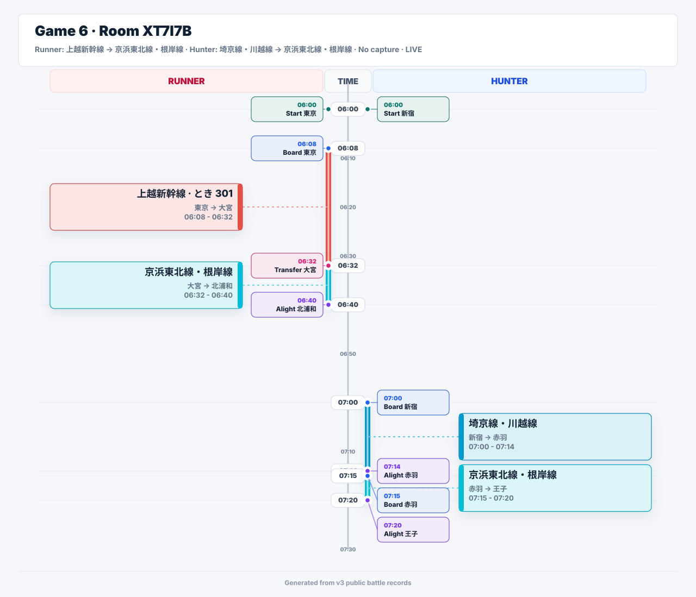
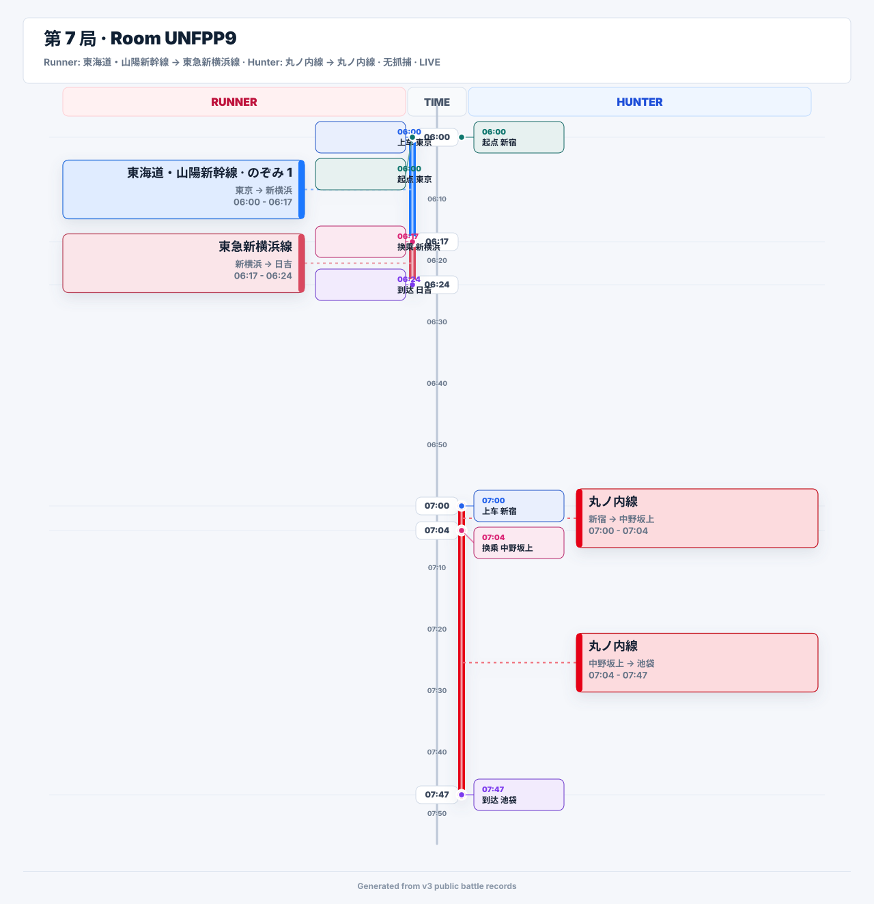
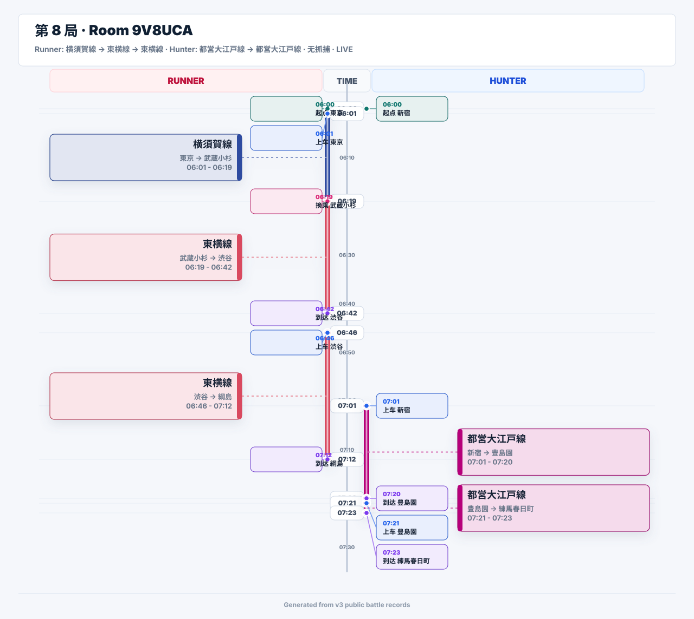
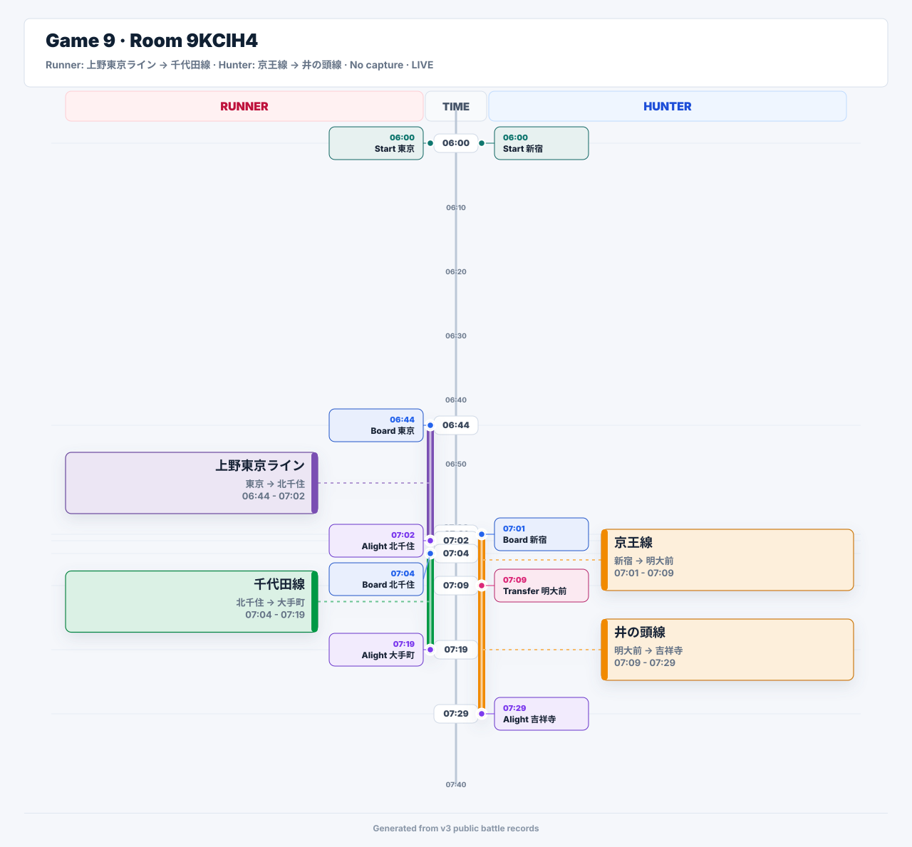
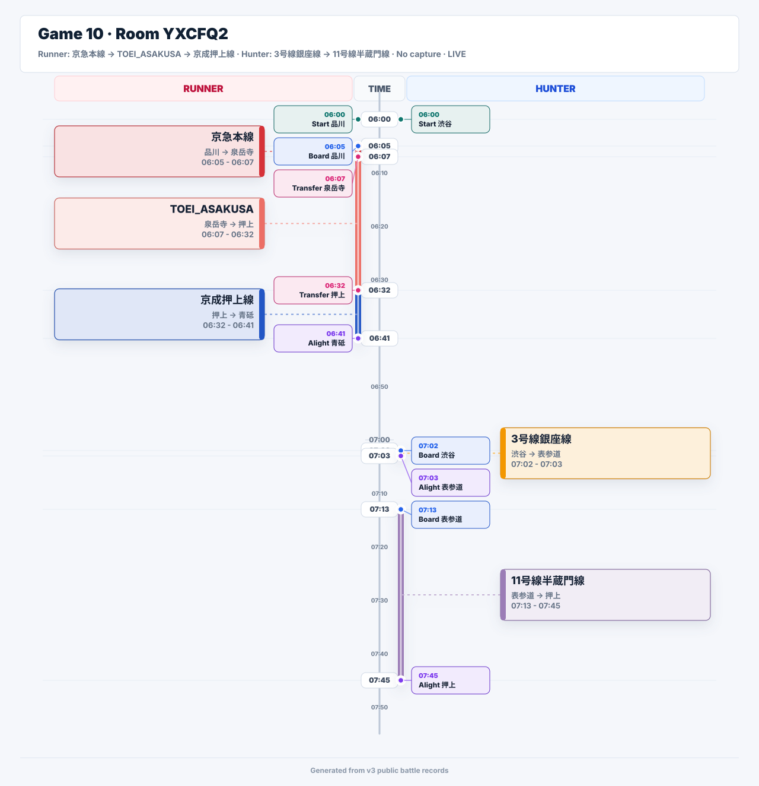

Time runs down the center. Runner is on the left, Hunter is on the right. Ride intervals use route colors, and station or transfer callouts stay attached to their event times.
Runner: 東海道線 -> 東急東横線 · Hunter: 丸ノ内線 -> 南北線 · No capture · phase LIVE

Runner: 山手線 -> 京急本線 · Hunter: 小田急小田原線 -> 京王井の頭線 · No capture · phase LIVE

Runner: 丸ノ内線 -> 南北線 · Hunter: 東西線 -> 丸ノ内線 · No capture · phase LIVE

Runner: 京葉線・武蔵野線 -> 有楽町線 · Hunter: 都営新宿線 -> 都営三田線 · No capture · phase LIVE

Runner: 総武快速線 -> 半蔵門線 · Hunter: 山手線 -> 西武新宿線 · No capture · phase LIVE

Runner: 上越新幹線 -> 京浜東北線・根岸線 · Hunter: 埼京線・川越線 -> 京浜東北線・根岸線 · No capture · phase LIVE

Runner: 東海道・山陽新幹線 -> 東急新横浜線 · Hunter: 丸ノ内線 -> 丸ノ内線 · No capture · phase LIVE

Runner: 横須賀線 -> 東急東横線 -> 東急東横線 · Hunter: 都営大江戸線 -> 都営大江戸線 · No capture · phase LIVE

Runner: 上野東京ライン -> 千代田線 · Hunter: 京王線 -> 京王井の頭線 · No capture · phase LIVE

Runner: 京急本線 -> 都営浅草線 -> 京成押上線 · Hunter: 銀座線 -> 半蔵門線 · No capture · phase LIVE
